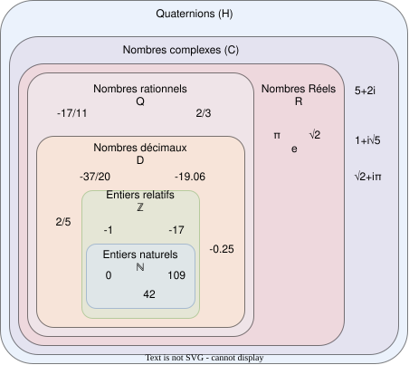

Nombres¤
Les nombres gouvernent le monde.
Dans notre enfance, nous apprenons à compter, puis à ranger les nombres dans divers ensembles. Les mathématicien·nes ont défini des familles de nombres qui vérifient des propriétés particulières ; elles s'emboîtent les unes dans les autres, chaque ensemble étant inclus dans le suivant. La figure suivante illustre cette hiérarchie.


Les principaux ensembles de nombres sont les suivants :
- \(\mathbb{N}\) : ensemble des entiers naturels (0, 1, 2, 3, ...)
- \(\mathbb{Z}\) : ensemble des entiers relatifs (..., -3, -2, -1, 0, 1, 2, 3, ...)
- \(\mathbb{D}\) : ensemble des décimaux (-0,1, 0, 0,1, 0,2, 0,3, ...)
- \(\mathbb{Q}\) : ensemble des rationnels (0, 1, ½, ⅓, ¼, ...)
- \(\mathbb{R}\) : ensemble des réels (\(\pi\), \(\sqrt{2}\), ...)
- \(\mathbb{C}\) : ensemble des complexes (\(i\), \(1 + i\), ...)
- \(\mathbb{H}\) : ensemble des quaternions (\(1 + i + j + k\), ...)
- \(\mathbb{O}\) : ensemble des octonions
- \(\mathbb{S}\) : ensemble des sédénions
Quaternions, octonions et sédénions
Les quaternions , octonions et sédénions sont des nombres hypercomplexes qui généralisent les nombres complexes . Ils sont utilisés en physique pour décrire les rotations dans l'espace.
Les quaternions sont couramment utilisés en informatique pour représenter les rotations en 3D. Les octonions et sédénions prolongent ce modèle, mais restent plus confidentiels en pratique.
À chaque fois que l'on s'éloigne du réel (et c'est une manière amusante de le formuler), on perd des propriétés intéressantes. Les nombres complexes ne sont pas ordonnés, les quaternions ne sont pas commutatifs, les octonions ne sont pas associatifs et les sédénions ne sont même pas alternatifs. Un nombre alternatif vérifie la relation suivante :
Dans une carrière d'ingénieur·e, il est rare d'avoir à manipuler quaternions, octonions ou sédénions. Les nombres complexes constituent néanmoins une extension utile des nombres réels, très présente en physique et en mathématiques, et exploitable en C sous certaines conditions.
Archimède disait : Δός μοι πᾶ στῶ καὶ τὰν γᾶν κινάσω (donnez-moi un point d'appui et je soulèverai le monde). Le Créateur, s'il existe, aurait pu dire : « Donnez-moi un nombre et je vous construirai un univers ! » Bien entendu, la quantité d'information dans l'univers est gargantuesque ; elle croît avec l'entropie et donc avec le temps. Mais à l'origine du temps et de l'espace, il n'est pas impensable que l'univers ait pu naître d'un nombre. Stephen Wolfram explore cette idée dans son ouvrage A New Kind of Science , où il imagine l'univers comme un système informatique ou algorithmique régi par des lois fondamentales simples dont l'évolution produit la diversité des phénomènes observés.
Dans le jeu Minecraft , lorsque vous créez un monde, vous pouvez utiliser une graine pour générer un univers pseudo-aléatoire. Cette graine est un nombre fini qui sert de base à l'algorithme de génération. Si vous utilisez la même graine, vous obtenez le même monde . La graine -5584399987456711267 permet par exemple d'obtenir de splendides cerisiers en fleurs rappelant la saison du sakura à Kyoto . Pour que cela fonctionne, il faut toutefois le code source de Minecraft : lui aussi n'est qu'une succession de 0 et de 1, donc un nombre fini.

Lorsque vous jouez, vos actions génèrent de l'information qui influence le monde ; la quantité d'information croît avec l'entropie que vous injectez dans le système. C'est pourquoi plus vous jouez, plus la sauvegarde de votre monde grossit, tout en demeurant représentable par un nombre fini : une succession de 0 et de 1.
Notons que les mémoires des ordinateurs sont finies, limitées par le nombre de transistors qui les composent. Il n'est donc pas possible d'y stocker n'importe quelle valeur. \(\pi\) ne peut pas être enregistré intégralement, mais une approximation de \(\pi\) le peut. L'informatique impose ainsi des contraintes sur les nombres que l'on peut manipuler. Les entiers sont les plus simples à gérer, mais ils restent bornés par la taille de la mémoire et la manière dont on les encode. Il est donc utile de définir des bornes selon l'usage visé. La graine de Minecraft est, par exemple, un entier de 64 bits.
Entiers naturels¤
En mathématiques, un entier naturel est un nombre positif ou nul. Chaque nombre a un successeur unique et peut s'écrire avec une suite finie de chiffres en notation décimale positionnelle, donc sans signe ni virgule. L'ensemble des entiers naturels est défini de la façon suivante :
Les entiers constituent les premiers types de données manipulés par les ordinateurs. Stockés en mémoire sous forme de bits, ils offrent une plage de valeurs dépendant de la taille réservée. Un entier de 8 bits peut, par exemple, représenter \(2^8 = 256\) valeurs différentes, de 0 à 255. Un entier de 16 bits en représente \(2^{16} = 65 536\), de 0 à 65 535. Chaque bit supplémentaire double la plage disponible.
Example
Le nombre 142 peut s'écrire sur 8 bits en binaire, avec une notation positionnelle (où les bits sont alignés par poids décroissants) on peut écrire :
La taille de stockage d'un entier détermine donc ses limites. Si cette manière est élégante, elle ne permet hélas pas de représenter des valeurs négatives. Pour cela, on aura recours aux entiers relatifs.
Entiers relatifs¤
Mathématiquement un entier relatif appartient à l'ensemble \(\mathbb{Z}\) :
Vous le savez désormais, l'interprétation d'une valeur binaire n'est possible qu'en connaissant son encodage . S'agissant d'entiers, on peut se demander comment stocker des valeurs négatives, car il manque une information pour représenter le signe - (et, de la même manière, le signe +).
Une première idée consisterait à réserver une partie de la mémoire aux entiers positifs et une autre aux entiers négatifs, en stockant la correspondance binaire/décimale séparément. Ce serait un peu comme disposer chez soi de deux boîtes : l'une pour les aliments encore consommables (le réfrigérateur), l'autre pour ceux qui ne le sont plus (la poubelle).
L'ennui pour les variables c'est que le contenu peut changer et qu'un nombre négatif pourrait très bien devenir positif après un calcul. Il faudrait alors le déplacer d'une région mémoire à une autre. Ce n'est donc pas la meilleure méthode.
On pourrait alors renseigner la nature du nombre, c'est-à-dire son signe avec sa valeur.
Bit de signe¤
Pourquoi ne pas se réserver un bit de signe , par exemple le 8e bit de notre nombre de 8 bits, pour indiquer si le nombre est positif ou négatif ? C'est cet exemple qui est montré ici :
┌─┐┌─┬─┬─┬─┬─┬─┬─┐
│0││1│0│1│0│0│1│1│ = (0 * (-1)) * 0b1010011 = 83
└─┘└─┴─┴─┴─┴─┴─┴─┘
┌─┐┌─┬─┬─┬─┬─┬─┬─┐
│1││1│0│1│0│0│1│1│ = (1 * (-1)) * 0b1010011 = -83
└─┘└─┴─┴─┴─┴─┴─┴─┘
Cette méthode impose de sacrifier un bit ; l'intervalle représentable se limite donc à [-127..127]. Elle souffre en outre d'un autre inconvénient majeur : la représentation du zéro.
Dans cette représentation, il existe deux zéros : le zéro négatif 0b00000000 et le zéro positif 0b10000000, ce qui complique les comparaisons. \(0\) est-il égal à \(-0\) ? Conceptuellement oui, mais l'information stockée diffère.
Du point de vue des calculs, l'addition n'est plus cohérente si l'on raisonne directement sur les bits. En ajoutant 1 au zéro positif (0b10000000), on obtient 1, tandis qu'en ajoutant 1 au zéro négatif (0b00000000), on obtient −1 : résultat pour le moins déroutant.
000 001 010 011 100 101 110 111
─┼─────┼─────┼─────┼─────┼─────┼─────┼─────┼───>
000 001 010 011 100 101 110 111
─┼─────┼─────┼─────┼─> ─┼─────┼─────┼─────┼───> Méthode du bit de signe
0 1 2 3 0 -1 -2 -3
Il faudrait donc trouver une méthode qui permettrait de conserver la possibilité de faire les opérations directement en binaire. En d'autres termes, on souhaiterait pouvoir calculer en base deux sans se soucier du signe :
Si on résume, la solution proposée qui utilise un bit de signe pose deux problèmes :
- Les opérations ne sont plus triviales, et un algorithme particulier doit être mis en place pour les gérer.
- Le double zéro (positif et négatif) est gênant.
Complément à un¤
Le complément à un est une méthode plus maline utilisée dans les premiers ordinateurs comme le CDC 6600 (1964 ) ou le UNIVAC 1107 (1962 ). Il existe également un bit de signe, mais il est implicite.
Le complément à un tire son nom de sa définition générique nommée radix-complement ou complément de base et s'exprime par :
où
- \(b\)
-
La base du système positionnel utilisé
- \(n\)
-
Le nombre de chiffres maximal du nombre considéré
- \(y\)
-
La valeur à complémenter.
Ainsi, il est facile d'écrire le complément à neuf d'un nombre en base dix, car on s'arrange pour que chaque chiffre composant le nombre on trouve un autre chiffre dont la somme est égale à neuf.
0 1 2 3 4 5 6 7 8 9
|
| Complément à 9
v
+ 9 8 7 6 5 4 3 2 1 0
-------------------
9 9 9 9 9 9 9 9 9 9
On notera avec beaucoup d'intérêt qu'un calcul est possible avec cette méthode. Sur l'exemple suivant, à gauche, on montre une soustraction classique, à droite on remplace la soustraction par une addition ainsi que les valeurs négatives par leur complément à 9. Le résultat 939 correspond après complément à un à 60.
Notons que le cas précis de l'inversion des chiffres correspond au complément de la base, moins un. L'inversion des bits binaire est donc le complément à \((2-1) = 1\).
000 001 010 011 100 101 110 111
─┼─────┼─────┼─────┼─────┼─────┼─────┼─────┼───>
000 001 010 011 100 101 110 111
─┼─────┼─────┼─────┼─> <─┼─────┼─────┼─────┼─── complément à un
0 1 2 3 -3 -2 -1 0
Reprenons l'exemple précédent de soustraction, on notera que l'opération fonctionne en soustrayant 1 au résultat du calcul.
Pour résumer les avantages et inconvénients du complément à un :
- Les opérations redeviennent presque triviales, mais il est nécessaire de soustraire 1 au résultat (c'est dommage).
- Le double zéro (positif et négatif) est gênant.
Complément à deux¤
Le complément à deux n'est rien d'autre que le complément à un plus un. C'est donc une amusante plaisanterie des informaticiens. Car dans un système binaire, le nombre de symboles est de 2 (0 et 1). On ne peut pas trouver un chiffre tel que la somme donne 2. C'est la même idée que de demander le complément à 10 en base 10. Vous ne pouvez pas sur la base d'un chiffre unique obtenir un autre chiffre dont la somme est égale à 10 sans avoir recours à un autre chiffre.
Pour réaliser ce complément à deux (complément à un plus un), il y a deux étapes :
- Calculer le complément à un du nombre d'entrées.
- Ajouter 1 au résultat.
Oui, et alors, en quoi cela change le Schmilblick ? Surprenamment, on résout tous les problèmes amenés par le complément à un. Prenons les différentes représentations que nous avons vues jusqu'à présent :
000 001 010 011 100 101 110 111
─┼─────┼─────┼─────┼─────┼─────┼─────┼─────┼───>
0 1 2 3 4 5 6 7 sans complément
0 1 2 3 0 -1 -2 -3 avec bit de signe
0 1 2 3 -3 -2 -1 0 complément à un
0 1 2 3 -4 -3 -2 -1 complément à deux
On peut également les représenter sous forme d'un cercle comme illustré sur la figure suivante :

Avec le bit de signe, on observe deux ruptures dans la continuité de la représentation. Un saut de 3,0 et un autre -3,0. Avec le complément à un, on n'observe toujours deux sauts 0,0 et -3,-3. Avec le complément à deux, on n'observe plus qu'un seul saut 3, -4, et la continuité est assurée de -1 à 0. Par ailleurs, le zéro n'a plus de double représentation.
Au niveau du calcul, l'addition et la soustraction fonctionnent de manière identique. Prenons l'exemple de la soustraction suivante :
2 00000010
- 5 + 11111011 (~0b101 + 1 == 0b11111011)
--- -----------
-3 11111101 (~0b11111101 + 1 == 0b11 == 3)
Cette notation est donc très élégante, car :
- Les opérations sont triviales.
- Le problème du double zéro est résolu.
- On gagne une valeur négative
[-128..+127]contre[-127..+127]avec les méthodes précédemment étudiées.
Vous l'aurez compris, le complément à deux est bien le mécanisme de représentation des nombres négatifs qui a été retenu par les informaticiens, et le plus utilisé de nos jours dans les ordinateurs. Gardez cependant à l'esprit que ces mécanismes ne sont qu'une interprétation d'un contenu binaire stocké en mémoire.
Les nombres réels¤
Mathématiquement, les nombres réels \(\mathbb{R}\), sont des nombres qui peuvent être représentés par une partie entière, et une liste finie ou infinie de décimales. En informatique, stocker une liste infinie de décimale demanderait une quantité infinie de mémoire et donc, la précision arithmétique est contrainte.
Au début de l'ère des ordinateurs, il n'était possible de stocker que des nombres entiers, mais le besoin de pouvoir stocker des nombres réels s'est rapidement fait sentir et la transition s'est faite progressivement. D'abord par l'apparition de la virgule fixe, puis par la virgule flottante.
Le premier ordinateur avec une capacité de calcul en virgule flottante date de 1942 (ni vous ni moi n'étions probablement nés) avec le Zuse's Z4, du nom de son inventeur Konrad Zuse.
Attardons-nous un peu sur ces concepts de virgule fixe et de virgule flottante .
Virgule fixe¤
Pour illustrer notre propos, prenons l'exemple d'un nombre entier exprimé sur 8-bits, on peut admettre facilement que bien qu'il s'agisse d'un nombre entier, une virgule pourrait être ajoutée au bit zéro sans en modifier sa signification. Dans cet exemple, ajoutons une virgule à la position 0 :
┌─┬─┬─┬─┬─┬─┬─┬─┐
│0│1│0│1│0│0│1│1│ = 2^6 + 2^4 + 2^1 + 2^0 = 64 + 16 + 2 + 1 = 83
└─┴─┴─┴─┴─┴─┴─┴─┘
, / 2^0 ----> 83 / 1 = 83
Imaginons à présent que nous déplacions cette virgule virtuelle de trois éléments sur la gauche. En admettant que deux ingénieurs se mettent d'accord pour considérer ce nombre 0b01010011 avec une virgule fixe positionnée à droite du quatrième bit, l'interprétation de cette grandeur serait alors la valeur entière divisée par 8 (\(2^3\)). On parvient alors à exprimer une grandeur réelle comportant une partie décimale :
┌─┬─┬─┬─┬─┬─┬─┬─┐
│0│1│0│1│0│0│1│1│ = 2⁶ + 2⁴ + 2¹ + 2⁰ = 64 + 16 + 2 + 1 = 83
└─┴─┴─┴─┴─┴─┴─┴─┘
, / 2³ ----> 83 / 8 = 10.375
Cependant, il manque une information. Un ordinateur, sans yeux et sans bon sens, est incapable sans information additionnelle d'interpréter correctement la position de la virgule puisque sa position n'est encodée nulle part dans le nombre. En outre, puisque la position de cette virgule est dans l'intervalle [0..7], il serait possible d'utiliser trois bits supplémentaires à cette fin :
┌─┬─┬─┬─┬─┬─┬─┬─┐
│0│1│0│1│0│0│1│1│ = 2⁶ + 2⁴ + 2¹ + 2⁰ = 64 + 16 + 2 + 1 = 83
└─┴─┴─┴─┴─┴─┴─┴─┘
┌─┬─┬─┐
│0│1│1│ / 2³ ----> 83 / 8 = 10.375
└─┴─┴─┘
Cette solution est élégante, mais demande à présent 11-bits contre 8-bits initialement. Un ordinateur n'étant doué que pour manipuler des paquets de bits souvent supérieurs à 8, il faudrait soit étendre inutilement le nombre de bits utilisés pour la position de la virgule à 8, soit tenter d'intégrer cette information, dans les 8-bits initiaux.
Virgule flottante¤
Depuis l'exemple précédent, imaginons que l'on sacrifie 3 bits sur les 8 pour encoder l'information de la position de la virgule. Appelons l'espace réservé pour positionner la virgule l' exposant et le reste de l'information la mantisse, qui en mathématique représente la partie décimale d'un logarithme (à ne pas confondre avec la mantis shrimp, une quille ou crevette-mante boxeuse aux couleurs particulièrement chatoyantes).
exp. mantisse
┞─┬─┬─╀─┬─┬─┬─┬─┦
│0│1│0│1│0│0│1│1│ = 2⁴ + 2¹ + 2⁰ = 16 + 2 + 1 = 19
└─┴─┴─┴─┴─┴─┴─┴─┘
└────────────> / 2¹ ----> 19 / 2 = 9.5
Notre construction nous permet toujours d'exprimer des grandeurs réelles, mais avec ce sacrifice, il n'est maintenant plus possible d'exprimer que les grandeurs comprises entre \(1\cdot2^{7}=0.0078125\) et \(63\). Ce problème peut être aisément résolu en augmentant la profondeur mémoire à 16 ou 32 bits. Ajoutons par ailleurs que cette solution n'est pas à même d'exprimer des grandeurs négatives.
Poursuivons notre raisonnement. Cette fois-ci nous choisissons d'étendre notre espace de stockage à 4 octets. Un bit de signe est réservé pour exprimer les grandeurs négatives, 8 bits pour l'exposant et 23 bits pour la mantisse :
┌ Signe 1 bit
│ ┌ Exposant 8 bits
│ │ ┌ Mantisse 23 bits
┴ ───────┴──────── ────────────────────┴──────────────────────────
┞─╀─┬─┬─┬─┬─┬─┬─┐┌─╀─┬─┬─┬─┬─┬─┬─┐┌─┬─┬─┬─┬─┬─┬─┬─┐┌─┬─┬─┬─┬─┬─┬─┬─┦
│0│0│0│1│0│0│0│0││0│1│0│0│1│0│0│0││1│1│0│1│1│1│1│1││0│1│0│0│0│0│0│1│
└─┴─┴─┴─┴─┴─┴─┴─┘└─┴─┴─┴─┴─┴─┴─┴─┘└─┴─┴─┴─┴─┴─┴─┴─┘└─┴─┴─┴─┴─┴─┴─┴─┘
Peu à peu, nous nous rapprochons du Standard for Floating-Point Arithmetic (IEEE 754). La formule de base est la suivante :
Avec :
- \(s\)
-
Signe (\(\pm1\))
- \(b\)
-
Base de l'exposant, un entier \(>1\).
- \(e\)
-
Exposant, un entier entre \(e_\text{min}\) et \(e_\text{max}\)
- \(p\)
-
Précision, nombre de digits en base \(b\) de la mantisse
- \(f_k\)
-
Entier non négatif plus petit que la base \(b\).
Étant donné que les ordinateurs sont plus à l'aise à la manipulation d'entrées binaire, la base est 2 et la norme IEEE nomme ces nombres binary16, binary32 ou binary64, selon le nombre de bits utilisé pour coder l'information. Les termes de Single precision ou Double precision sont aussi couramment utilisés.
Les formats supporté par un ordinateur ou qu'un microcontrôleur équipé d'une unité de calcul en virgule flottante (FPU pour Floating point unit) sont les suivants :
| IEEE-754 | Exposant | Mantisse | Signe |
|---|---|---|---|
binary32 |
8 bits | 23 bits | 1 bit |
binary64 |
11 bits | 52 bits | 1 bit |
Il est temps de faire quelques observations :
- une valeur encodée en virgule flottante sera toujours une approximation d'une grandeur réelle ;
- la précision est d'autant plus grande que le nombre de bits de la mantisse est grand ;
- la base ayant été fixée à 2, il est possible d'exprimer \(1/1024\) sans erreur de précision, mais pas \(1/1000\) ;
- un ordinateur qui n'est pas équipé d'une FPU sera beaucoup plus lent (10 à 100x) pour faire des calculs en virgule flottante ;
- bien que le standard C99 définisse les types virgule flottante
float,doubleetlong double, ils ne définissent pas la précision avec laquelle ces nombres sont exprimés, car cela dépend de l'architecture du processeur utilisé.
Simple précision¤
Le type float aussi dit à précision simple utilise un espace de stockage de 32-bits organisé en 1 bit de signe, 8 bits pour l'exposant et 23 bits pour la mantisse. Les valeurs pouvant être exprimées sont de :
- \(\pm\inf\) lorsque l'exposant vaut
0xff - \((-1)^{\text{sign}}\cdot2^{\text{exp} - 127}\cdot1.\text{mantisse}\)
- \(0\) lorsque la mantisse vaut
0x00000
Voici quelques exemples. Tout d'abord, la valeur de 1.0 est encodée de la manière suivante :
La valeur positive maximale exprimable est lorsque l'exposant vaut 0xfe et la mantisse 0x7fffff :
La valeur de \(-\pi\) (pi) est :
On peut encore noter quelques valeurs particulières :
0 00000000 00000000000000000000000₂ ≡ 0000 0000₁₆ ≡ 0
0 11111111 00000000000000000000000₂ ≡ 7f80 0000₁₆ ≡ inf
1 11111111 00000000000000000000000₂ ≡ ff80 0000₁₆ ≡ −inf
Dépassement de capacité
Il ne faut pas oublier que la représentation des nombres en virgule flottante n'est pas exacte et il est possible de dépasser la capacité de stockage d'un nombre en virgule flottante. Quant à la précision maximale d'un nombre en virgule flottante, il dépend de sa mantisse.
Par exemple, si l'on souhaite réaliser un intégrateur simple, nous disposons d'un compteur u initialisé à 1.0. À chaque itération, on incrémente u de 1.0. Lorsque la valeur cesse de croître, on affiche la valeur de u.
#include <stdio.h>
int main() {
float u = 1.0, v;
do { v = u++; } while (u > v);
printf("%f\n", u);
}
Vous pourriez vous attendre à ce que le programme tourne à l'infini, où du moins jusqu'à une limite très grande, mais en réalité, il s'arrête à 16777216.0. C'est parce que la précision de la mantisse est de 23 bits, et que le nombre 16777217.0 est le premier nombre entier qui ne peut pas être représenté avec une précision de 23 bits.
Les nombres subnormaux
On l'a vu un nombre en virgule flottante simple précision s'écrit sous la forme :
Les nombres subnormaux sont des nombres qui ne respectent pas la norme IEEE 754, mais qui sont tout de même représentables. Ils sont utilisés pour représenter des nombres très petits, proches de zéro. En effet, la norme IEEE 754 impose que le premier bit de la mantisse soit toujours égal à 1, ce qui implique que le nombre 0 ne peut pas être représenté. Les nombres subnormaux permettent de représenter des nombres très proches de zéro, en diminuant la précision de la mantisse.
Double précision¤
La double précision est similaire à la simple précision, mais avec une mantisse à 52 bits et 11 bits d'exposants. Le nombre est donc représentable sur 64 bits. La valeur maximale est de \(1.7976931348623157 \times 10^{308}\) et la valeur minimale de \(2.2250738585072014 \times 10^{-308}\). La résolution en nombre de chiffres significatifs est de 15 à 16 chiffres contre 6 à 7 pour la simple précision. Cette notation est donc très pertinente pour les calculs scientifiques, mais elle requiert aussi plus de mémoire.
Exercice 28 : Expressions arithmétiques flottantes
Donnez la valeur des expressions ci-dessous :
Quadruple précision¤
Bien que ce soit marginal dans le monde de l'informatique, la quadruple précision est une norme définie dans IEEE 754 qui utilise 128 bits pour stocker les nombres réels. Elle est utilisée pour des calculs scientifiques nécessitant une très grande précision comme au CERN ou pour l'étude de modèles cosmologiques. La quadruple précision offre une précision de 34 chiffres significatifs, soit environ 112 bits de précision.
Seul un nombre réduit de langages de programmation peut gérer nativement cette notation, et la grande majorité des processeurs n'est pas prévue pour les traiter efficacement. Il est néanmoins possible de l'utiliser avec certains compilateurs C comme GCC en utilisant le type __float128 de la bibliothèque <quadmath.h>.
Lenteurs
Utiliser la quadruple précision ralenti considérablement les calculs, car les processeurs actuels ne sont pas optimisés pour travailler sur 128 bits. Un processeur peut faire des calculs sur 64 bits en une seule opération, mais pour des calculs en quadruple précision, l'effort est considérablement plus grand.
Nombres complexes¤
En C, il est possible de définir des nombres complexes en utilisant le type complex de la bibliothèque <complex.h>. Les nombres complexes sont composés de deux parties, la partie réelle et la partie imaginaire. Ils sont souvent utilisés en mathématiques pour représenter des nombres qui ne peuvent pas être exprimés avec des nombres réels. Ils ont été introduits avec la version C99 du standard C.
Néanmoins les nombres complexes ne sont pas supportés par les opérateurs du langage, il est donc nécessaire d'utiliser des fonctions spécifiques pour effectuer des opérations complexes.
Note
Dans des langages plus haut niveau comme le C++, le C# ou Python, les nombres complexes sont supportés nativement.
Exemple en Python :
from math import sqrt
a, b, c = 1, 2, 3
delta = b**2 - 4*a*c # Calcul du discriminant qui sera négatif
x1, x2 = (-b + sqrt(delta)) / (2*a), (-b - sqrt(delta)) / (2*a)
x1 et x2 sont des nombres complexes.
Voici un exemple en C :
#include <stdio.h>
#include <complex.h>
int main() {
double complex z1 = 1.0 + 2.0*I;
double complex z2 = 3.0 + 4.0*I;
printf("z1 = %.1f + %.1fi\n", creal(z1), cimag(z1));
printf("z2 = %.1f + %.1fi\n", creal(z2), cimag(z2));
double complex sum = z1 + z2;
double complex product = z1 * z2;
printf("sum = %.1f + %.1fi\n", creal(sum), cimag(sum));
printf("product = %.1f + %.1fi\n", creal(product), cimag(product));
return 0;
}
Format Q (virgule fixe)¤
Le format Q est une notation en virgule fixe dans laquelle le format d'un nombre est représenté par la lettre Q suivie de deux nombres :
- Le nombre de bits entiers.
- Le nombre de bits fractionnaires.
Ainsi, un registre 16 bits contenant un nombre allant de +0.999 à -1.0 s'exprimera Q1.15 soit 1 + 15 valant 16 bits.
Pour exprimer la valeur pi (3.1415...) il faudra au minimum 3 bits pour représenter la partie entière, car le bit de signe doit rester à zéro. Le format sur 16 bits sera ainsi Q4.12.
La construction de ce nombre est facile :
- Prendre le nombre réel à encoder (\(3.1415926535\))
- Le multiplier par 2 à la puissance du nombre de bits (\(2^{12} * 3.1415926535 = 12867.963508736\))
- Prendre la partie entière (\(12867\))
Pour convertir un nombre Q4.12 en sa valeur réelle il faut :
- Prendre le nombre encodé en Q4.12 (\(12867\))
- Diviser sa valeur 2 à la puissance du nombre de bits (\(12867 / 2^{12} = 3.141357421875\))
On peut noter une perte de précision puisqu'il n'est pas possible d'encoder un tel nombre dans seulement 16 bits. L'incrément positif minimal serait : \(1 / 2^{12} = 0.00024\). Il convient alors d'arrondir le nombre à la troisième décimale, soit \(3.141\).
Les opérations arithmétiques restent triviales entre des nombres de mêmes types. Le chapitre sur les algorithmes décrit une implémentation de calcul de sinus en utilisant ce format.
Addition¤
L'addition peut se faire avec ou sans saturation :
typedef int16_t Q;
typedef Q Q12;
Q q_add(Q a, Q b) {
return a + b;
}
Q q_add_sat(Q a, Q b) {
int32_t res = (int32_t)a + (int32_t)b;
res = res > 0x7FFF ? 0x7FFF : res
res = res < -1 * 0x8000 ? -1 * 0x8000 : res;
return (Q)res;
}
Multiplication¤
Soit deux nombres 0.9 et 3.141 :
┌─┬─┬─┬─╀─┬─┬─┬─┐┌─┬─┬─┬─┬─┬─┬─┬─┦
│0│0│0│0│1│1│1│0││0│1│1│0│0│1│1│0│ Q4.12 (0.9) 3686
└─┴─┴─┴─┴─┴─┴─┴─┘└─┴─┴─┴─┴─┴─┴─┴─┘
┌─┬─┬─┬─╀─┬─┬─┬─┐┌─┬─┬─┬─┬─┬─┬─┬─┦
│0│0│1│1│0│0│1│0││0│1│0│0│0│0│1│1│ Q4.12 (3.141) 12867
└─┴─┴─┴─┴─┴─┴─┴─┘└─┴─┴─┴─┴─┴─┴─┴─┘
Multiplier ces deux valeurs revient à une multiplication sur 2 fois la taille. Le résultat doit être obtenu sur 32-bits sachant que les nombres Q s'additionnent comme Q4.12 x Q4.12 donnera Q8.24.
On voit immédiatement que la partie entière vaut 2, donc 90% de 3.14 donnera une valeur en dessous de 3. Pour reconstruire une valeur Q8.8 il convient de supprimer les 16-bits de poids faible.
3686 * 12867 = 47227762
┌─┬─┬─┬─┬─┬─┬─┬─┦┌─┬─┬─┬─┬─┬─┬─┬─┐┌─┬─┬─┬─┬─┬─┬─┬─┐┌─┬─┬─┬─┬─┬─┬─┬─┦
│0│0│0│0│0│0│1│0││1│1│0│1│0│0│0│0││1│0│1│0│0│0│1│1││0│1│1│1│0│0│1│0│ Q8.24
└─┴─┴─┴─┴─┴─┴─┴─┘└─┴─┴─┴─┴─┴─┴─┴─┘└─┴─┴─┴─┴─┴─┴─┴─┘└─┴─┴─┴─┴─┴─┴─┴─┘
┌─┬─┬─┬─┬─┬─┬─┬─┦┌─┬─┬─┬─┬─┬─┬─┬─┦
│0│0│0│0│0│0│1│0││1│1│0│1│0│0│0│0│ Q8.8
└─┴─┴─┴─┴─┴─┴─┴─┘└─┴─┴─┴─┴─┴─┴─┴─┘
inline Q q_sat(int32_t x) {
x = x > 0x7FFF ? 0x7FFF : x
x = x < -1 * 0x8000 ? -1 * 0x8000 : x;
return (Q)x;
}
inline int16_t q_mul(int16_t a, int16_t b, char q)
{
int32_t c = (int32_t)a * (int32_t)b;
c += 1 << (q - 1);
return sat(c >> q);
}
inline int16_t q12_mul(int16_t a, int16_t b)
{
return q_mul(a, b, 12);
}